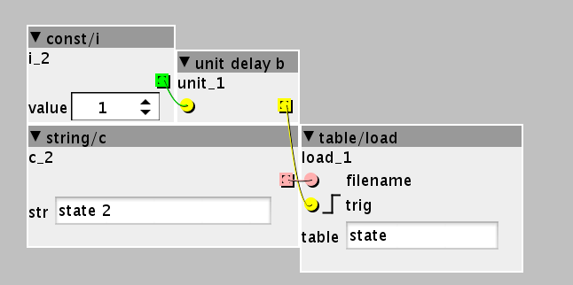

I have a few parameter settings written into a table that I want to load when the patch starts up.
So the data is in a file on the sd card and I use table/load to load on startup. While this works well once I use Axoloti standalone, it doesn't work when I go live.
This is how it looks like:

"state 2" is on the main directory on the sd card